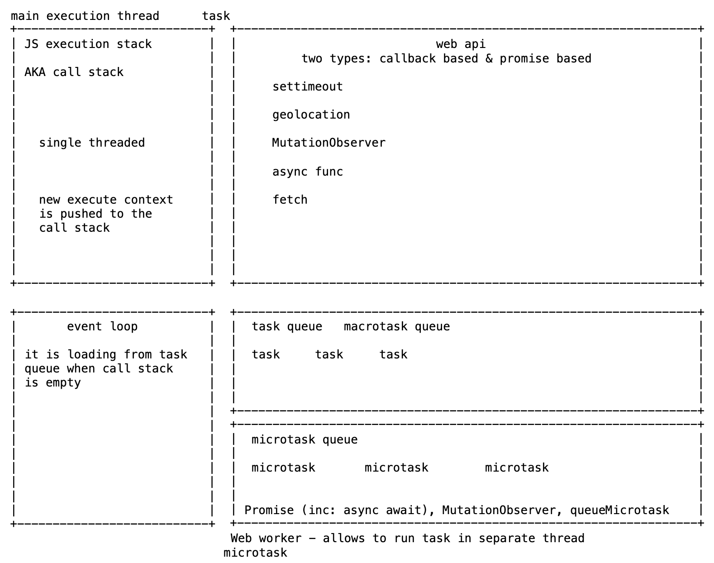

Event loop

g(What the heck is the event loop anyway? | Philip Roberts | JSConf EU)
from:
http://latentflip.com/loupe/
https://www.youtube.com/watch?v=eiC58R16hb8
MDN about microtasks
IMO better explanation
Overview